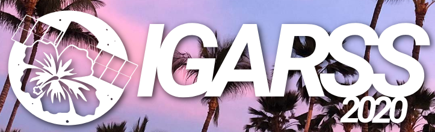

|
Jignesh Patel I am currently serving as an Assistant Professor at the Indian Institute of Information Technology, Vadodara (IIITV)- International Campus Diu (ICD). My research interests are Deep learning, Computer vision and Remote Sensing. My current work focuses on Communication, Hyperspectral imaging, using Machine learning. I received my PhD in 2022 under the guidance of Prof. Manjunath V. Joshi at DA-IICT, Gandhinagar, India. During my time at DA-IICT, I also served as a Teaching Assistant for various undergraduate, graduate, and Ph.D. courses. Prior to that, I obtained my M.E. in 2012 from GTU, Ahmedabad, India, and my B.E. in 2009 from HNGU, Patan. Home / Teaaching / Publications / Email / Scholar |
Publications |

|
A Dual-Stream Convolution-GRU-Attention Network for Automatic Modulation Classification
Riddhi Shah, Ashok Parmar, Divya K, Ankit Chouhan, Kamal Captain, Jignesh Patel. 16th International Conference on COMmunication Systems & NETworkS, 3-7 January, 2024, Bangaluru, India. |
|
|
Gaussian Mixture Model based Anomaly Detection for Defense Against Byzantine Attack in Cooperative Spectrum Sensing
Karan Shah, Ashok Parmar, Kamal Captain, Miguel López-Benítez, Jignesh Patel. IEEE Transactions on Cognitive Communications and Networking, 2023. |
|
|
Enhancing Cooperative Spectrum Sensing in Cognitive Radio Systems: Mitigating Byzantine Attacks with a Weighted Algorithm
Ankit Chouhan, Ashok Parmar, Kamal Captain, Jignesh Patel, Pawan Maurya. 16th International Conference on COMmunication Systems & NETworkS, 3-7 January, 2024, Bangaluru, India. |
|
|
Defending Cooperative Spectrum Sensing From Byzantine Attacks: An Effective Entropy-Based Weighted Algorithm
Ankit Chouhan, Kamal Captain, Ashok Parmar, Jignesh Patel. IEEE Wireless Communications Letters, 2023. |

|
Reinforcement learning for performance improvement in cooperative spectrum sensing
Rahul Kumar, Ashok Parmar, Kamal Captain, Jignesh Patel. Physical Communication , Volume 59, August 2023. |
|
Spectral Unmixing Using Autoencoder with Spatial and Spectral Regularizations
Jignesh Patel, Manjunath V. Joshi , Jignesh S. Bhatt. 2021 IEEE International Geoscience and Remote Sensing Symposium IGARSS , 11-16 July 2021, Brussels, Belgium. | |
|  |
A Novel Approach for Hyperspectral Image Superresolution Using Spectral Unmixing and Transfer Learning
Jignesh Patel, Manjunath V. Joshi , Jignesh S. Bhatt. 2020 IEEE International Geoscience and Remote Sensing Symposium IGARSS , 26 September 2020 - 02 October 2020,Waikoloa, HI, USA. |
|
|
Abundance Estimation Using Discontinuity Preserving and Sparsity-Induced Priors
Jignesh Patel, Manjunath V. Joshi , Jignesh S. Bhatt. IEEE Journal of Selected Topics in Applied Earth Observations and Remote Sensing, Volume: 12, Issue: 7, July 2019. |

|
A Novel Approach for Abundance Estimation Using Discontinuity Preserving Prior
Jignesh Patel, Manjunath V. Joshi , Jignesh S. Bhatt. 2018 IEEE International Geoscience and Remote Sensing Symposium IGARSS , 22-27 July 2018, Valencia, Spain. |
|
Website built using source code provided by Jon Barron. |